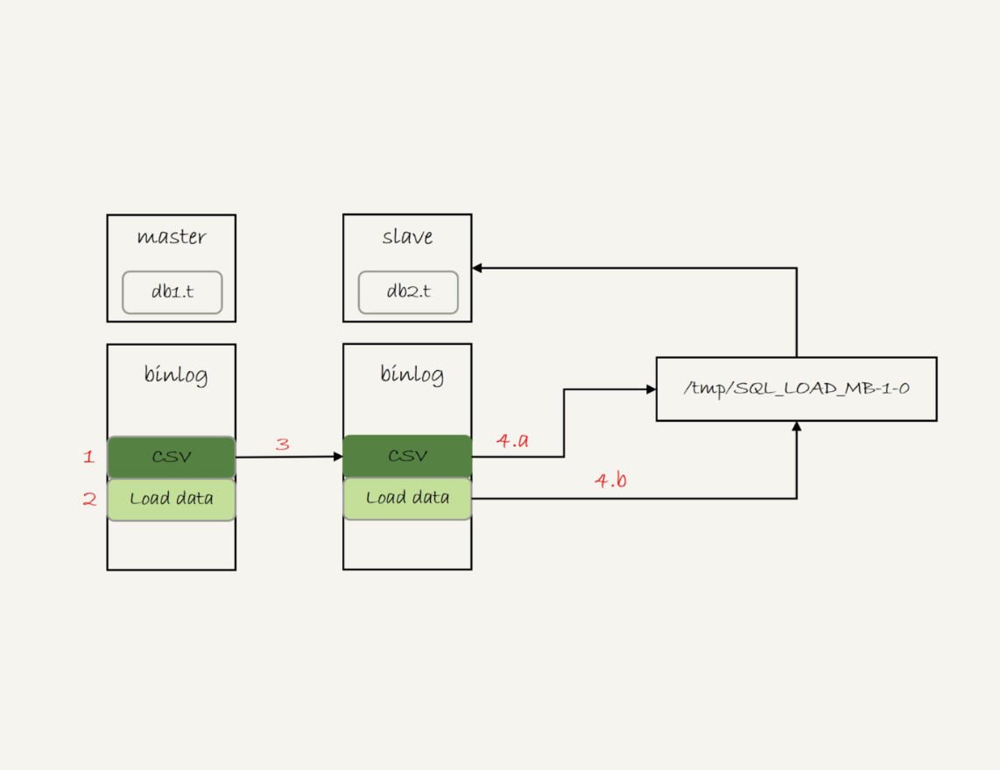
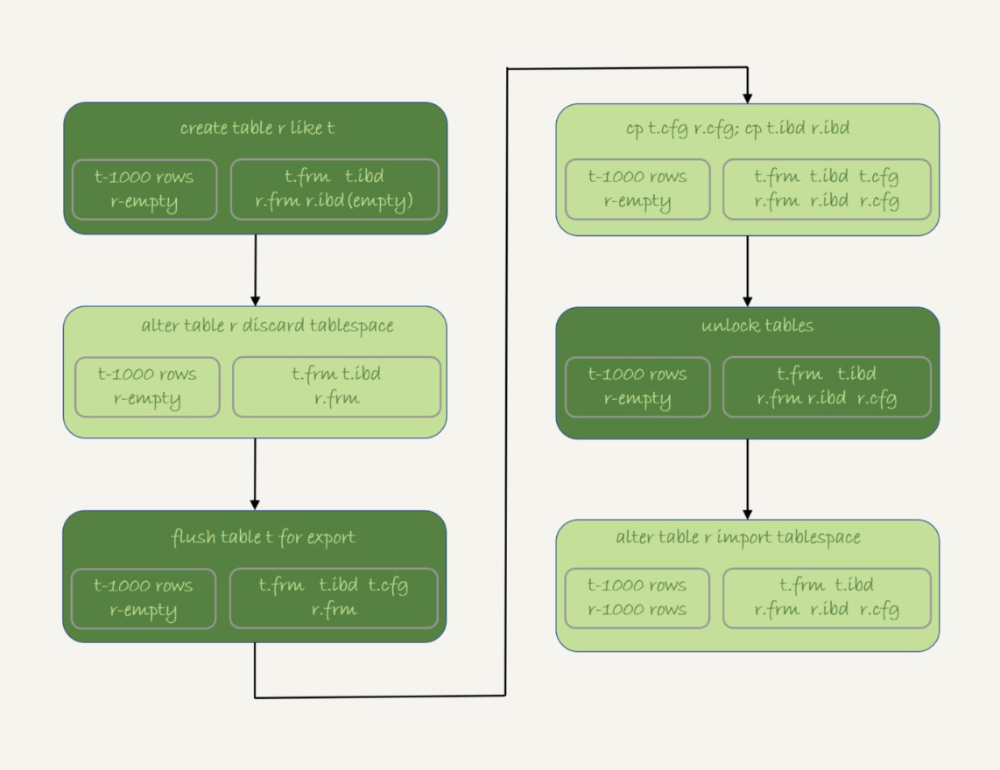

- 00 开篇词 这一次，让我们一起来搞懂MySQL.md.html
- 01 基础架构：一条SQL查询语句是如何执行的？.md.html
- 02 日志系统：一条SQL更新语句是如何执行的？.md.html
- 03 事务隔离：为什么你改了我还看不见？.md.html
- 04 深入浅出索引（上）.md.html
- 05 深入浅出索引（下）.md.html
- 06 全局锁和表锁 ：给表加个字段怎么有这么多阻碍？.md.html
- 07 行锁功过：怎么减少行锁对性能的影响？.md.html
- 08 事务到底是隔离的还是不隔离的？.md.html
- 09 普通索引和唯一索引，应该怎么选择？.md.html
- 10 MySQL为什么有时候会选错索引？.md.html
- 11 怎么给字符串字段加索引？.md.html
- 12 为什么我的MySQL会“抖”一下？.md.html
- 13 为什么表数据删掉一半，表文件大小不变？.md.html
- 14 count()这么慢，我该怎么办？.md.html
- 15 答疑文章（一）：日志和索引相关问题.md.html
- 16 “order by”是怎么工作的？.md.html
- 17 如何正确地显示随机消息？.md.html
- 18 为什么这些SQL语句逻辑相同，性能却差异巨大？.md.html
- 19 为什么我只查一行的语句，也执行这么慢？.md.html
- 20 幻读是什么，幻读有什么问题？.md.html
- 21 为什么我只改一行的语句，锁这么多？.md.html
- 22 MySQL有哪些“饮鸩止渴”提高性能的方法？.md.html
- 23 MySQL是怎么保证数据不丢的？.md.html
- 24 MySQL是怎么保证主备一致的？.md.html
- 25 MySQL是怎么保证高可用的？.md.html
- 26 备库为什么会延迟好几个小时？.md.html
- 27 主库出问题了，从库怎么办？.md.html
- 28 读写分离有哪些坑？.md.html
- 29 如何判断一个数据库是不是出问题了？.md.html
- 30 答疑文章（二）：用动态的观点看加锁.md.html
- 31 误删数据后除了跑路，还能怎么办？.md.html
- 32 为什么还有kill不掉的语句？.md.html
- 33 我查这么多数据，会不会把数据库内存打爆？.md.html
- 34 到底可不可以使用join？.md.html
- 35 join语句怎么优化？.md.html
- 36 为什么临时表可以重名？.md.html
- 37 什么时候会使用内部临时表？.md.html
- 38 都说InnoDB好，那还要不要使用Memory引擎？.md.html
- 39 自增主键为什么不是连续的？.md.html
- 40 insert语句的锁为什么这么多？.md.html
- 41 怎么最快地复制一张表？.md.html
- 42 grant之后要跟着flush privileges吗？.md.html
- 43 要不要使用分区表？.md.html
- 44 答疑文章（三）：说一说这些好问题.md.html
- 45 自增id用完怎么办？.md.html
- 我的MySQL心路历程.md.html
- 结束语 点线网面，一起构建MySQL知识网络.md.html
- 捐赠
41 怎么最快地复制一张表？
我在上一篇文章最后，给你留下的问题是怎么在两张表中拷贝数据。如果可以控制对源表的扫描行数和加锁范围很小的话，我们简单地使用 insert … select 语句即可实现。
当然，为了避免对源表加读锁，更稳妥的方案是先将数据写到外部文本文件，然后再写回目标表。这时，有两种常用的方法。接下来的内容，我会和你详细展开一下这两种方法。
为了便于说明，我还是先创建一个表 db1.t，并插入 1000 行数据，同时创建一个相同结构的表 db2.t。
create database db1;
use db1;
create table t(id int primary key, a int, b int, index(a))engine=innodb;
delimiter ;;
create procedure idata()
begin
declare i int;
set i=1;
while(i<=1000)do
insert into t values(i,i,i);
set i=i+1;
end while;
end;;
delimiter ;
call idata();
create database db2;
create table db2.t like db1.t
假设，我们要把 db1.t 里面 a>900 的数据行导出来，插入到 db2.t 中。
mysqldump 方法
一种方法是，使用 mysqldump 命令将数据导出成一组 INSERT 语句。你可以使用下面的命令：
mysqldump -h$host -P$port -u$user --add-locks=0 --no-create-info --single-transaction --set-gtid-purged=OFF db1 t --where="a>900" --result-file=/client_tmp/t.sql
把结果输出到临时文件。
这条命令中，主要参数含义如下：
- –single-transaction 的作用是，在导出数据的时候不需要对表 db1.t 加表锁，而是使用 START TRANSACTION WITH CONSISTENT SNAPSHOT 的方法；
- –add-locks 设置为 0，表示在输出的文件结果里，不增加” LOCK TABLES
tWRITE;” ； - –no-create-info 的意思是，不需要导出表结构；
- –set-gtid-purged=off 表示的是，不输出跟 GTID 相关的信息；
- –result-file 指定了输出文件的路径，其中 client 表示生成的文件是在客户端机器上的。
通过这条 mysqldump 命令生成的 t.sql 文件中就包含了如图 1 所示的 INSERT 语句。
图 1 mysqldump 输出文件的部分结果
可以看到，一条 INSERT 语句里面会包含多个 value 对，这是为了后续用这个文件来写入数据的时候，执行速度可以更快。
如果你希望生成的文件中一条 INSERT 语句只插入一行数据的话，可以在执行 mysqldump 命令时，加上参数–skip-extended-insert。
然后，你可以通过下面这条命令，将这些 INSERT 语句放到 db2 库里去执行。
mysql -h127.0.0.1 -P13000 -uroot db2 -e "source /client_tmp/t.sql"
需要说明的是，source 并不是一条 SQL 语句，而是一个客户端命令。mysql 客户端执行这个命令的流程是这样的：
- 打开文件，默认以分号为结尾读取一条条的 SQL 语句；
- 将 SQL 语句发送到服务端执行。
也就是说，服务端执行的并不是这个“source t.sql”语句，而是 INSERT 语句。所以，不论是在慢查询日志（slow log），还是在 binlog，记录的都是这些要被真正执行的 INSERT 语句。
导出 CSV 文件
另一种方法是直接将结果导出成.csv 文件。MySQL 提供了下面的语法，用来将查询结果导出到服务端本地目录：
select * from db1.t where a>900 into outfile '/server_tmp/t.csv';
我们在使用这条语句时，需要注意如下几点。
- 这条语句会将结果保存在服务端。如果你执行命令的客户端和 MySQL 服务端不在同一个机器上，客户端机器的临时目录下是不会生成 t.csv 文件的。
- into outfile 指定了文件的生成位置（/server_tmp/），这个位置必须受参数 secure_file_priv 的限制。参数 secure_file_priv 的可选值和作用分别是：
- 如果设置为 empty，表示不限制文件生成的位置，这是不安全的设置；
- 如果设置为一个表示路径的字符串，就要求生成的文件只能放在这个指定的目录，或者它的子目录；
- 如果设置为 NULL，就表示禁止在这个 MySQL 实例上执行 select … into outfile 操作。
- 这条命令不会帮你覆盖文件，因此你需要确保 /server_tmp/t.csv 这个文件不存在，否则执行语句时就会因为有同名文件的存在而报错。
- 这条命令生成的文本文件中，原则上一个数据行对应文本文件的一行。但是，如果字段中包含换行符，在生成的文本中也会有换行符。不过类似换行符、制表符这类符号，前面都会跟上“\”这个转义符，这样就可以跟字段之间、数据行之间的分隔符区分开。
得到.csv 导出文件后，你就可以用下面的 load data 命令将数据导入到目标表 db2.t 中。
load data infile '/server_tmp/t.csv' into table db2.t;
这条语句的执行流程如下所示。
- 打开文件 /server_tmp/t.csv，以制表符 (\t) 作为字段间的分隔符，以换行符（\n）作为记录之间的分隔符，进行数据读取；
- 启动事务。
- 判断每一行的字段数与表 db2.t 是否相同：
- 若不相同，则直接报错，事务回滚；
- 若相同，则构造成一行，调用 InnoDB 引擎接口，写入到表中。
- 重复步骤 3，直到 /server_tmp/t.csv 整个文件读入完成，提交事务。
你可能有一个疑问，如果 binlog_format=statement，这个 load 语句记录到 binlog 里以后，怎么在备库重放呢？
由于 /server_tmp/t.csv 文件只保存在主库所在的主机上，如果只是把这条语句原文写到 binlog 中，在备库执行的时候，备库的本地机器上没有这个文件，就会导致主备同步停止。
所以，这条语句执行的完整流程，其实是下面这样的。
- 主库执行完成后，将 /server_tmp/t.csv 文件的内容直接写到 binlog 文件中。
- 往 binlog 文件中写入语句 load data local infile ‘/tmp/SQL_LOAD_MB-1-0’ INTO TABLE
db2.t。 - 把这个 binlog 日志传到备库。
- 备库的 apply 线程在执行这个事务日志时： a. 先将 binlog 中 t.csv 文件的内容读出来，写入到本地临时目录 /tmp/SQL_LOAD_MB-1-0 中； b. 再执行 load data 语句，往备库的 db2.t 表中插入跟主库相同的数据。
执行流程如图 2 所示：

图 2 load data 的同步流程
注意，这里备库执行的 load data 语句里面，多了一个“local”。它的意思是“将执行这条命令的客户端所在机器的本地文件 /tmp/SQL_LOAD_MB-1-0 的内容，加载到目标表 db2.t 中”。
也就是说，load data 命令有两种用法：
- 不加“local”，是读取服务端的文件，这个文件必须在 secure_file_priv 指定的目录或子目录下；
- 加上“local”，读取的是客户端的文件，只要 mysql 客户端有访问这个文件的权限即可。这时候，MySQL 客户端会先把本地文件传给服务端，然后执行上述的 load data 流程。
另外需要注意的是，select …into outfile 方法不会生成表结构文件, 所以我们导数据时还需要单独的命令得到表结构定义。mysqldump 提供了一个–tab 参数，可以同时导出表结构定义文件和 csv 数据文件。这条命令的使用方法如下：
mysqldump -h$host -P$port -u$user ---single-transaction --set-gtid-purged=OFF db1 t --where="a>900" --tab=$secure_file_priv
这条命令会在 $secure_file_priv 定义的目录下，创建一个 t.sql 文件保存建表语句，同时创建一个 t.txt 文件保存 CSV 数据。
物理拷贝方法
前面我们提到的 mysqldump 方法和导出 CSV 文件的方法，都是逻辑导数据的方法，也就是将数据从表 db1.t 中读出来，生成文本，然后再写入目标表 db2.t 中。
你可能会问，有物理导数据的方法吗？比如，直接把 db1.t 表的.frm 文件和.ibd 文件拷贝到 db2 目录下，是否可行呢？
答案是不行的。
因为，一个 InnoDB 表，除了包含这两个物理文件外，还需要在数据字典中注册。直接拷贝这两个文件的话，因为数据字典中没有 db2.t 这个表，系统是不会识别和接受它们的。
不过，在 MySQL 5.6 版本引入了可传输表空间(transportable tablespace) 的方法，可以通过导出 + 导入表空间的方式，实现物理拷贝表的功能。
假设我们现在的目标是在 db1 库下，复制一个跟表 t 相同的表 r，具体的执行步骤如下：
- 执行 create table r like t，创建一个相同表结构的空表；
- 执行 alter table r discard tablespace，这时候 r.ibd 文件会被删除；
- 执行 flush table t for export，这时候 db1 目录下会生成一个 t.cfg 文件；
- 在 db1 目录下执行 cp t.cfg r.cfg; cp t.ibd r.ibd；这两个命令（这里需要注意的是，拷贝得到的两个文件，MySQL 进程要有读写权限）；
- 执行 unlock tables，这时候 t.cfg 文件会被删除；
- 执行 alter table r import tablespace，将这个 r.ibd 文件作为表 r 的新的表空间，由于这个文件的数据内容和 t.ibd 是相同的，所以表 r 中就有了和表 t 相同的数据。
至此，拷贝表数据的操作就完成了。这个流程的执行过程图如下：

图 3 物理拷贝表
关于拷贝表的这个流程，有以下几个注意点：
- 在第 3 步执行完 flsuh table 命令之后，db1.t 整个表处于只读状态，直到执行 unlock tables 命令后才释放读锁；
- 在执行 import tablespace 的时候，为了让文件里的表空间 id 和数据字典中的一致，会修改 r.ibd 的表空间 id。而这个表空间 id 存在于每一个数据页中。因此，如果是一个很大的文件（比如 TB 级别），每个数据页都需要修改，所以你会看到这个 import 语句的执行是需要一些时间的。当然，如果是相比于逻辑导入的方法，import 语句的耗时是非常短的。
小结
今天这篇文章，我和你介绍了三种将一个表的数据导入到另外一个表中的方法。
我们来对比一下这三种方法的优缺点。
- 物理拷贝的方式速度最快，尤其对于大表拷贝来说是最快的方法。如果出现误删表的情况，用备份恢复出误删之前的临时库，然后再把临时库中的表拷贝到生产库上，是恢复数据最快的方法。但是，这种方法的使用也有一定的局限性：
- 必须是全表拷贝，不能只拷贝部分数据；
- 需要到服务器上拷贝数据，在用户无法登录数据库主机的场景下无法使用；
- 由于是通过拷贝物理文件实现的，源表和目标表都是使用 InnoDB 引擎时才能使用。
- 用 mysqldump 生成包含 INSERT 语句文件的方法，可以在 where 参数增加过滤条件，来实现只导出部分数据。这个方式的不足之一是，不能使用 join 这种比较复杂的 where 条件写法。
- 用 select … into outfile 的方法是最灵活的，支持所有的 SQL 写法。但，这个方法的缺点之一就是，每次只能导出一张表的数据，而且表结构也需要另外的语句单独备份。
后两种方式都是逻辑备份方式，是可以跨引擎使用的。
最后，我给你留下一个思考题吧。
我们前面介绍 binlog_format=statement 的时候，binlog 记录的 load data 命令是带 local 的。既然这条命令是发送到备库去执行的，那么备库执行的时候也是本地执行，为什么需要这个 local 呢？如果写到 binlog 中的命令不带 local，又会出现什么问题呢？
你可以把你的分析写在评论区，我会在下一篇文章的末尾和你讨论这个问题。感谢你的收听，也欢迎你把这篇文章分享给更多的朋友一起阅读。
上期问题时间
我在上篇文章最后给你留下的思考题，已经在今天这篇文章的正文部分做了回答。
上篇文章的评论区有几个非常好的留言，我在这里和你分享一下。
@huolang 同学提了一个问题：如果 sessionA 拿到 c=5 的记录锁是写锁，那为什么 sessionB 和 sessionC 还能加 c=5 的读锁呢？
这是因为 next-key lock 是先加间隙锁，再加记录锁的。加间隙锁成功了，加记录锁就会被堵住。如果你对这个过程有疑问的话，可以再复习一下[第 30 篇文章]中的相关内容。
@一大只 同学做了一个实验，验证了主键冲突以后，insert 语句加间隙锁的效果。比我在上篇文章正文中提的那个回滚导致死锁的例子更直观，体现了他对这个知识点非常好的理解和思考，很赞。
@roaming 同学验证了在 MySQL 8.0 版本中，已经能够用临时表处理 insert … select 写入原表的语句了。
© 2019 - 2023 Liangliang Lee. Powered by gin and hexo-theme-book.